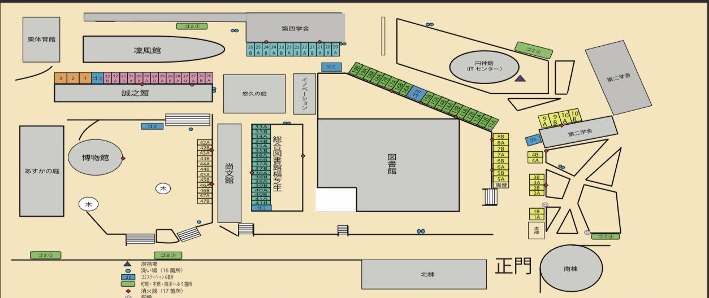

模擬店・出店一覧
FOOD STALLS
学生団体による模擬店の一覧です。1・2日目と3・4日目で出店団体が入れ替わります。メニューや団体名で検索できます。内容は変更になる場合があります。
1・2日目(11月1日・2日)
営業時間 10:00〜16:00
マップを拡大
経商エリア
- 1AKU NEXPO
- 1B10TXHX
- 2A26卒
- 2BBEGIN
- 3ACafé BIGBANG
- 3B関大STEP
- 4ABro's
- 4B関口ゼミによるりくこのやきそばやさん
- 5AFULLHOUSE
- 5BKFGテニスクラブ
- 6APADDLEs
- 6BKUBA
- 7Aギタークラブ
- 7BHANZEON
- 8AMILEN
- 8B沈ゼミ
- 9AMCS
- 9B吹奏楽サークル Bis 1
- 10A吹奏楽サークル Bis 2
- 10BAl Balón 1
メインエリア
- 11Aイカ焼
- 11B北原聡ゼミ3回生
- 12AMariko Shirasu
- 12B天文同好会 Cancer
- 13ASHAKE
- 13BKUリンク
- 14Aグラスホッパー
- 14BLot-Union
- 15A軽音1部油そば部
- 15Bアンビリーバブルズ
- 16Aかんくら1
- 16Bかんくら2
- 17A商学部岩本ゼミ
- 17Bキャップ 野球サークル
- 18A関大ランナーズ
- 18Bfriends
- 19Aご立派フランク
- 19Bチュロス警察24時
工学エリア
- 20Aバンフ4回
- 20BF.C. TRIOS
- 21APACMAN
- 21BAl Balón 2
- 22Aやまちゃんと愉快な仲間たち
- 22B人間健康学部祭典実行委員会
- 23Aあげパスタ佐々木
- 23BLovingwind
- 24Aラーメン同好会
- 24BLIX
- 25A関西大学統一学園祭実行委員会OB・OG会
- 25B関西大学統一学園祭実行委員会OB・OG会
凜風エリア
- 26A奥村ゼミ
- 26B競技かるたサークル
- 27Aしーば井上
- 27BNOBLESSE
- 28Aサッカー
- 28Bユースホステルクラブ
- 29Acookies
- 29Bスキューバダイビング同好会
- 30AShuttle☆Run
- 30BFINE
- 31Aピックルボールチーム WHALESS
- 31Bジョニくら
- 32A英語研究部
- 32Bてぃもクラ
- 1関西大学大道芸サークル
- 2ユネスコ研究部
- 3関西大学サバイバルゲームサークル
芝生エリア
- 33Aテコンドーサークル
- 33Bボランティアセンター学生スタッフ
- 34A葦の葉倶楽部
- 34Bルシーダテニスクラブ
- 35A学生チーム"漢舞"
- 35B基礎スキー同好会
- 36Aダイナマイトポップコーン製作委員会
- 36Bsweet☆spot
- 37Acafe de 関大
- 37B料理サークル「うまい房」
- 38A音楽映像団体 MUVA
- 38Bコーヒー研究会
- 39A生協学生サポートチーム1
- 39B生協学生サポートチーム2
- 40Aイエローサブマリン
- 40B安田ゼミ4回生
- 41AMTK
- 41Bバドミントン部
法文エリア
- 42A茶道部
- 42B中国語研究部
- 43APersona Perdida
- 43B徳山ゼミ
- 44A服部ローンテニスクラブ
- 44B写真部デジタルパート
- 45A学生団体KUMC
- 45B剣道クラブ有鄰会
- 46A児童文化研究サークルあかとんぼ
- 46B証券研究部
- 47AMDL
- 47BSDGsキャンパスサポーター
- 48A海外調査研究部
- 48B会計学術研究部
- 49A稲葉ゼミ
- 49B混声合唱団「葦」
- 50AMilty
- 50BBORA BORA
3・4日目(11月3日・4日)
営業時間 10:00〜16:00 ※最終日11/4は14:30まで


マップを拡大経商エリア
- 1A外祭
- 1Bバックパッキング同好会
- 2A松田ゼミ
- 2BClazy In You
- 3AF.C.TRIOS(4回)
- 3B千里山フレンズ
- 4AFCミルセン
- 4BJ-CaJa
- 5A商学部ゼミナール協議会
- 5BKANDAI DPE
- 6AKandai Young Vision
- 6BSCtiquitaca
- 7A斎藤ゼミ3回生
- 7B斎藤ゼミ4回生
- 8ATrinity
- 8B軽音サークル MCBB
- 9Aチェゼミ
- 9Bフラッシングメドウ
- 10Aポートピア関大前
- 10BAl Balón 1
メインエリア
- 11Aイカ焼
- 11B関西大学 Banditz
- 12Aらぴっと
- 12B焼きそばガチガチ
- 13Aスペイン語研究会
- 13B坂本ゼミ
- 14A古川ゼミ
- 14B史学研究部
- 15Aバレーボール同好会
- 15B文学部祭典実行委員会OBOG
- 16Aフラサークル Lino
- 16B映像研究会
- 17A2部バレーボール同好会
- 17Bトライアスロンサークル INFINITY
- 18A山住ゼミ
- 18Bfriends
- 19Aご立派フランク
- 19Bチュロス警察24時
工学エリア
- 20Aごいごいかん!
- 20B関大猛虎サークル
- 21A頑張っていきま商祭
- 21BAl Balón 2
- 22Aやまちゃんと愉快な仲間たち
- 22B児童文化サークル「うぶ」
- 23A榊原ゼミ
- 23Bタコ素晴(タコスバル)
- 24Aさつまいも愛好会
- 24Bハンドボールサークル漢送
- 25A佐々木ゼミ
- 25B後藤ゼミ
凜風エリア
- 26Aともきおじさんのクッキー
- 26B経済学部ゼミナール協議会
- 27Aラーメンサークル「津々浦々」
- 27B書道部
- 28A横山ゼミ
- 28BFC.Tweede
- 29Acookies
- 29B商23 STAND
- 30AJapan Anime Culture研究会
- 30Bsoul beat crew
- 31Aボランティアサークルチャレンジャー
- 31B侑BOSS
- 32A食品栄養化学研究室
- 32BNexus Volley
- 1関西大学大道芸サークル
- 3ガンアリーナ関大
芝生エリア
- 33APICMINTON
- 33B西岡ゼミ
- 34Aマスコミュニケーション学研究部
- 34B写真部フィルムパート
- 35ALabios
- 35B千里山法律学会
- 36A法律相談所
- 36B北川ゼミ
- 37A友田ゼミ
- 37B昭和レトロ同好会
- 38A劉ゼミ
- 38B旅行隊
- 39A山本ゼミ
- 39B元関大一高女バレー
- 40A速記部
- 40B加藤ゼミ
- 41A千葉ゼミ
- 41Bruffian
法文エリア
- 42A現代文学研究部
- 42B動物愛すの会
- 43AFF
- 43B上野ゼミ
- 44A韓国人留学生会
- 44B新熊ゼミ
- 45A杉本ゼミ
- 45B抹茶サークル
- 46A生協学生企画室
- 46Bいろは。
- 47A上妻ゼミ
- 47B西岡ゼミ
条件に合うお店が見つかりませんでした。別の言葉で検索してみてください。